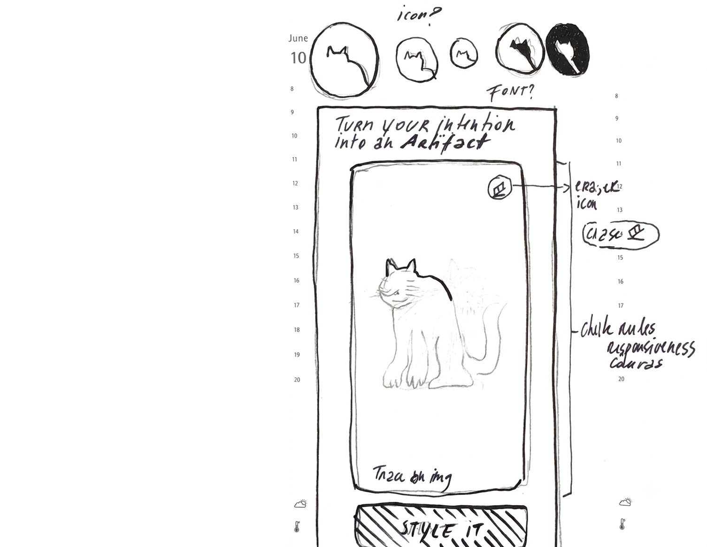
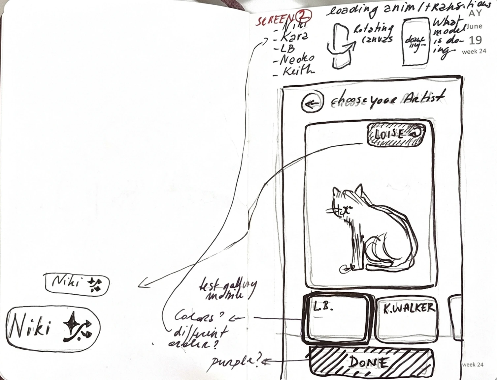
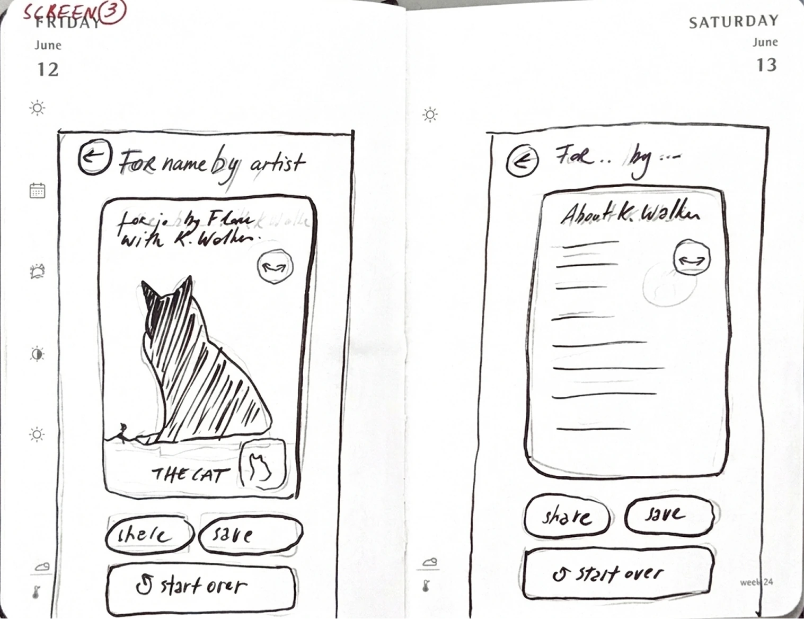
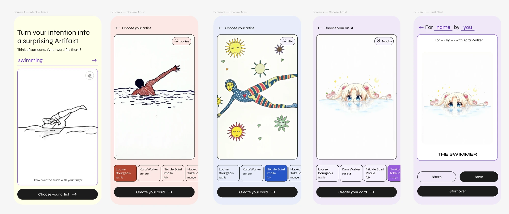
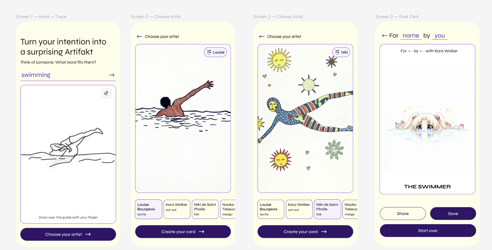
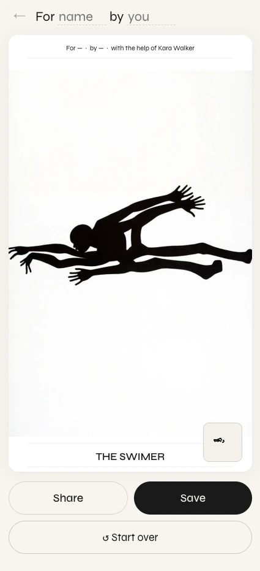
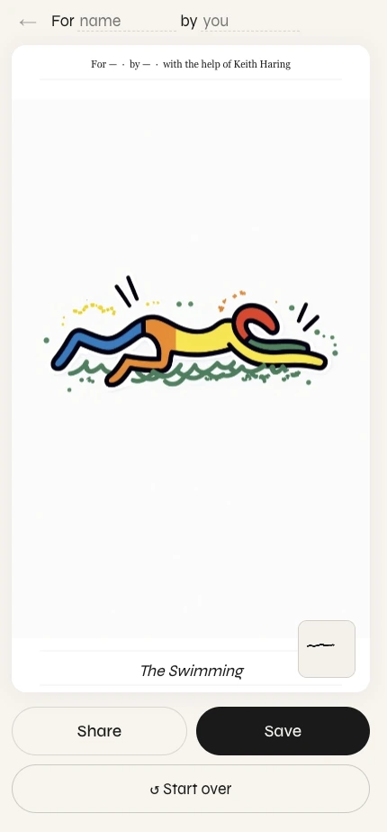
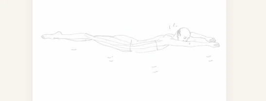

Design process log for the sketch-to-artwork app: the visual system and key decisions, the diversity & gender prompting logic, and the onboarding flow designed to avoid drop-off. Built on the sketches drawn right after the previous session. Last updated: June 2026.
00From sketch to build
This session started from three hand sketches drawn right after documenting the previous one — a place to think out loud about enhancements, icons, animations and copy. They became the brief for everything below: the annotations are essentially the to-do list.

Screen 1 — Intent + Trace. Notes: icon? / font? · “Turn your intention into an Artifakt” · eraser icon · chalk-rules / expressiveness on the canvas · “Trace this …” entry · Style it.

Screen 2 — Choose artist. Notes: artist list (Niki, Kara, LB, Naoko, Keith) · loading anim / transitions · “what model is doing” · Louise shuffle pill · colours? / different order? / purple? · Done.

Screen 3 — Final card. “For name by artist” · THE CAT · share / save / start over — plus an “About K. Walker” artist-bio panel idea (not yet built).
01Visual system & decisions
Implemented the three screens from Figma and settled the visual language: one typeface, a purple-on-cream palette, and a single tidy type scale. The guiding principle that resolved most debates — the artwork is the hero, so the UI around it stays a quiet frame.
Typeface
Syne throughout (weights 400–800). Geometric but quirky — distinctive without shouting. One rule: never all-caps, except the one sanctioned place — the THE WORD card label.
Colour — the exploration
Two directions were compared before committing. Purple was chosen for its meaning (the colour of feminism), but the question was how much.

Version A. A different pastel ground per screen + black buttons. Lively but arbitrary — the colours had no logic, and they competed with the artwork.

Version B → chosen direction. One consistent cream ground + deep-aubergine buttons. Calmer, coherent, and it gives the artwork a neutral frame.
Purple as accent, never as the artwork’s background.
The “too much” feeling came from colouring the canvas itself. The canvas frames someone else’s creativity — it should stay neutral. Purple lives in actions, accents and selected states on a warm cream paper.
Design tokens
paper#feffe9
ink#1a1a1a
accent#612bbe
accent-line#7c3aed
button#321366
card / pill#f6f2fc
muted#9e9a93
Type scale — “the sizes were all over the place”
~9 ad-hoc sizes were collapsed into one six-step scale, driven by CSS variables so it’s changeable in one place.
32pxHeadlinepage headline (H1)
24pxInput · For / bykeyword input, card byline
20pxTHE WORDcard label (only caps)
16pxSubtitle · buttons · navbody / actions
14pxHints · card names · pillsecondary
12pxCard sub-labelstertiary
Icons & card polish
Icon set — eraser (canvas), smart-shuffle pill (artist), arrow-right (input + forward buttons), restart (start over). Custom SVGs using currentColor so they inherit each button’s colour.
Full-bleed final card — the artwork was letterboxed; now a cropped cover backdrop fills the canvas (gaps become the image’s own edges, e.g. black around the Kara cat) and the whole image draws on top, so the drawing is never cut.
For / by byline — fixed a flexbox overflow so “For [name] by [you]” stretches evenly across the full width.
02Diversity & gender via positive prompting
The default outputs skewed white, thin and European-featured — including Naoko’s manga always rendering blonde, blue-eyed figures. Fixing this surfaced a technique worth keeping: positive prompting.
The thing I learned
Describe what you want — don’t negate what you don’t.
Flux is a positive-prompt model: a negation like “not white” barely registers. You have to positively state the attributes you want (“deep brown skin”, “black hair”) and only add a short negation as a backstop.
And vague words betray you: “diverse” collapses straight back to the model’s default. The three moves that actually work — specificity (name skin tone, hair, features, body), foreground anchoring (state who the central subject is, or they land in the background), and rotation (vary across a pool so it doesn’t tokenise one type).
Who works on this
Joy Buolamwini / Algorithmic Justice League — Gender Shades, exposing how vision models fail on darker skin & women.
Timnit Gebru / DAIR — bias in large models.
Sasha Luccioni et al. (Hugging Face) — Stable Bias, measuring how text-to-image models default to white / male / thin, and how prompts shift it.
What changed in the prompts
First sketch (scaffold) — a rotating pool of nine specific, POC-centred subjects; one is picked at random and placed as the foreground subject each generation.
// rotated per generation — specificity + foreground + rotation
SUBJECT_POOL = [ Black woman, natural coiled/afro hair · dark-skinned Black
person, full-figured, locs · East Asian woman, straight black hair ·
Southeast Asian woman, soft rounded body · South Asian woman · brown-skinned
plus-size woman · Black trans or non-binary person · Indigenous / Latina
woman · older woman of colour … ]
“…drawn as the central foreground subject”“centers women, trans and non-binary people of colour”“never default to a thin white or masculine-presenting figure”
Naoko Takeuchi — the blonde/blue-eyed default lived in the colour pass.
pass 2 · colouririses deep brown or black · warm-brown / golden-tan / deep-brown skinblack or dark brown hair (straight, wavy or coiled)
subject is a person of colour — most often East/Southeast Asian
never blond · never blue eyes · never pale-white / European default
Kara Walker — figures must be Black, varied in body type, and a solid cut-out (it was rendering as a hollow outline).
pass 1pass 2strength 0.70 → 0.82Black people as pure solid ink-black cut-out silhouettesvaried body types: full-figured, curvy, broad, round, heavyset AND tallnever an empty outline · no hollow interior// strength raised so the black actually floods the body
The outline bug was a strength problem, not just wording.
At 0.70 the img-to-img preserved too much of the line sketch, so the body stayed a hollow outline. Raising Kara’s colour-pass strength to 0.82 lets the black flood the silhouette while still following the pose.
03Onboarding — designing against drop-off
On mobile the headline + input ate roughly a third of the screen, leaving the canvas cramped — bad for the one thing the app is about: tracing. The deeper principle that shaped the fix: show the gesture, don’t tell it. An animated trace demonstrates the verb (“drag over this”), where a static sketch only shows the noun.
The options we weighed
① Reclaiming canvas space
rejected
Collapse on scroll
Scroll fights the drawing gesture — a finger-drag would scroll instead of draw.
rejected
Auto-fullscreen on touch
The first touch is the first stroke — going fullscreen on it eats the stroke or feels jarring.
chosen
State-based collapse on confirm
Confirming a word collapses the headline into a chip and expands the canvas. Tied to a meaningful moment, no gesture conflict.
② First load — what greets you
considered
Clean intent boot
Just headline + input. Most on-concept, but a blank canvas is less self-explanatory.
considered
Example chip
A small “try: cat” offer. Keeps the demo, but hides it behind a tap.
chosen
Visible animated demo
A look-only cat that draws itself on a ghost-trace loop. Shows the gesture before a word is typed — “something visible tells more than words.”
③ Reading detail — zoom
chosen
A · Pinch-zoom + pan
One finger draws, two fingers zoom/pan inside the canvas. Best for precise tracing.
rejected
B · Expand reference view
Cheap, but you’d trace small while looking big — split attention.
rejected
C · Zoom ± buttons
Reliable, but adds chrome to a clean screen.
first
D · Bigger canvas
Shipped first via the collapse — solved most of the problem before zoom was even needed.
The chosen flow
State 1 · Intent
Cat draws itself
Headline + input (full hierarchy)
Look-only ghost-trace cat
Two ways forward ↓
→
State 2 · Trace
Big canvas
Headline collapses → word chip + back
Canvas expands to fill
Pinch to zoom into detail
→
Next
Choose your artist
Carries the traced sketch forward
Two entry paths into State 2:
“Sketch a cat” → real AI cat scaffoldtype a word → scaffold for that word
The demo silhouette is never traced — it only teaches the gesture.
Sub-decisions
Look-only demo — the cat is pointer-events: none; nothing is interactive until you commit, which sidesteps the “touch eats the first stroke” problem.
“Sketch a cat” generates a real scaffold — not the silhouette. The label was changed from “Trace this cat” once it was clear you trace the generated sketch, not the demo.
The cat SVG — a single continuous outline path, so the ghost line draws the whole cat in one satisfying stroke. Sized down with even padding so it breathes.
Reduced-motion — users with that setting see the trace already half-drawn and still, so the concept still reads without animation.
Pinch-zoom is view-only — a CSS transform on a layer holding the scaffold + canvas, so strokes stay in canvas coordinates and the final-card export is untouched. A “Pinch to zoom in and out” hint sits under the canvas.
04Supporting logic — card-label grammar
The card prints THE [WORD], turning verbs into agent nouns. A bug printed “THE SWIMER”; fixing it meant defining a small grammar rule for -ing words.
swimming → swimmer, running → runner — the -ing form already shows the doubled consonant; keep it.
writing → writer, biting → biter — silent-e words never double.
drawing → drawer, reading → reader — single trailing consonant, just add -er.
next step Generalise the rule — low priority
The current logic covers the common cases, but English agent-noun formation is irregular. A more robust approach (a broader rule set, a small dictionary, or an LLM call) should be considered later so it holds up across a much wider range of words.
05Open questions & next steps
up next Loading animations & transitions
The immediate focus: motion for the in-between moments — scaffold generation, artist styling, and screen-to-screen transitions — to make the waits feel intentional and the flow feel continuous. (Already sketched as “loading anim / what the model is doing” on Screen 2.)
Pinch-zoom feel — tune sensitivity, max zoom and double-tap reset on a real device.
Full-bleed card — verify the cover-crop on a real generated card (esp. the Kara black fill).
“About the artist” panel — the bio screen from the Screen 3 sketch isn’t built yet.
Card-label grammar — generalise the agent-noun rule (see §04, low priority).
Purple intensity — decide how saturated the accent should feel once motion is in.
06Visual appendix
Test outputs and states from the session.

Kara Walker — solid black cut-out. Also the source of the “THE SWIMER” label bug (§04).

Keith Haring final card. Flat neon fills, graphic immediacy.

Line scaffold. A light gestural sketch — the kind of guide you trace over.